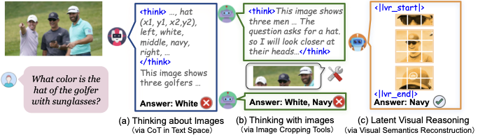
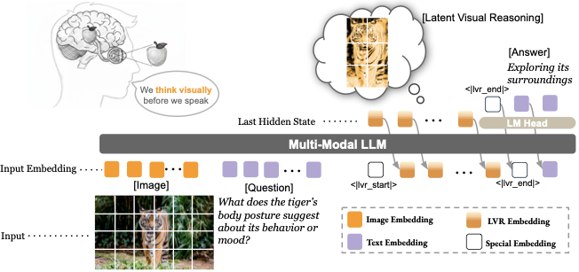
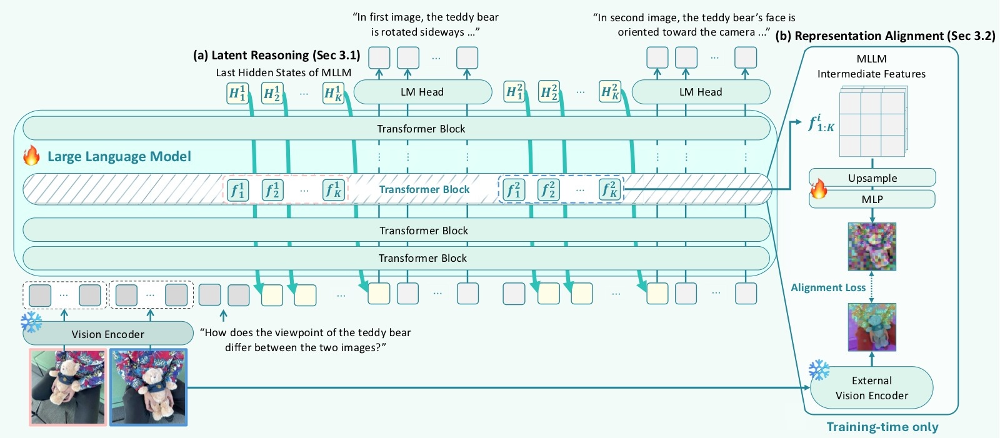
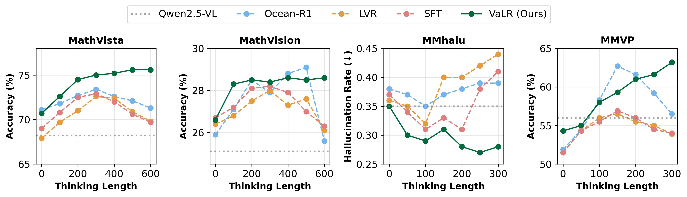
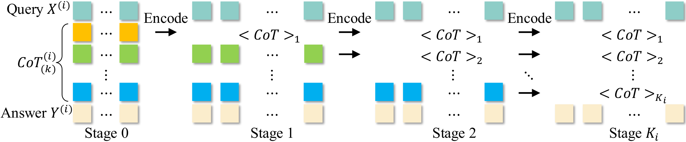

Latent Reasoning for Multimodal Models: A Survey Note
笔记信息 - 类型：综述性质笔记 - 范围：基于
2026-06-11/下 7 篇 latent reasoning / hidden thinking / multimodal reasoning 相关论文笔记 - 覆盖论文：CapImagine、Heima、ImgCoT、LVR、LatentOmni、SLVR、VaLR - 日期：2026-06-11 - 关键词：latent reasoning、hidden thinking、text bottleneck、visual grounding、CoT compression、causal intervention本文基于以下本地材料整理：
- CapImagine: Imagination Helps Visual Reasoning, But Not Yet in Latent Space
- Heima: Efficient Reasoning with Hidden Thinking
- ImgCoT: Compressing Long Chain of Thought into Compact Visual Tokens for Efficient Reasoning of Large Language Model
- LVR: Latent Visual Reasoning
- LatentOmni: Rethinking Omni-Modal Understanding via Unified Audio-Visual Latent Reasoning
- SLVR: Semantic-Enriched Latent Visual Reasoning
- VaLR: Vision-aligned Latent Reasoning for Multi-modal Large Language Model
一、核心结论
这 7 篇论文共同围绕一个问题展开：多模态模型的中间推理到底应该写成文本，还是压缩到连续 latent space 里？
它们并没有给出一个单边答案。更准确的结论是：
latent reasoning 不是天然有效，只有当 latent token 被强监督、可干预、能保持输入差异并真正影响输出时，它才是推理变量；否则它很容易退化为占位符、soft prompt 或压缩噪声。
这批工作可以分成三条主线：
- 视觉 latent 推理线：LVR、SLVR、VaLR、LatentOmni 认为文本 CoT 会丢失视觉/音视频证据，因此希望让模型在连续空间中保存感官信息。
- CoT 压缩线：Heima、ImgCoT 关注推理效率，把长文本 CoT 压缩成少量 hidden / visual tokens，但两者对"压缩什么"的理解不同。
- 反证与替代线：CapImagine 用因果分析指出现有 LVR latent token 很可能不是真推理变量，转而主张显式 text-space imagination。
 图1(a)：LVR 的核心主张。相比纯文本推理和外部工具推理，LVR 试图让 LLM hidden state 直接重建 ROI 视觉语义，在 visual-text joint embedding space 中推理。 |
 图1(b)：CapImagine 的反证框架。它分别检查 X→Z 和 Z→Y 两条因果边，发现多个 LVR 方法的 latent token 高度同质，替换后答案几乎不变。 |
图1：这两张图构成了本综述的核心张力。LVR 代表"latent space 可以承载视觉推理"的正向主张；CapImagine 代表"不能只看性能提升，必须证明 latent token 真的被输入驱动、并真的影响答案"的反向审计。后续 SLVR、VaLR、LatentOmni 的价值，正是在这个审计标准下重新强化 latent 的语义、视觉和时序监督。
如果把这 7 篇论文放在同一坐标系中，核心分歧不是"要不要 latent"，而是四个更具体的问题：
| 问题 | 支持 latent 的论文 | 质疑或修正 |
|---|---|---|
| latent 是否保留输入差异？ | LVR、SLVR、VaLR、LatentOmni | CapImagine 指出现有 LVR latent 可能跨实例高度相似 |
| latent 是否真正影响输出？ | SLVR、LatentOmni、VaLR 通过性能/消融间接证明 | CapImagine 要求 do-intervention，替换 latent 后输出应显著变 |
| latent 压缩的是什么？ | Heima 压缩 CoT 阶段，ImgCoT 压缩推理结构，LVR 压缩视觉 ROI | CapImagine 认为黑盒 latent 不如可审计文本想象 |
| latent 如何训练才不坍缩？ | 视觉重建、语义 embedding、REPA、OSPE、progressive distillation | 固定长度/可变长度、训练-推理 mismatch、语义不足仍是风险 |
二、资料范围与谱系
这篇综述只使用当前仓库中 2026-06-11 已整理的 7 篇笔记，不额外引入未读论文。
| 论文 | 类型 | 解决的核心问题 | 在谱系中的角色 |
|---|---|---|---|
| LVR | 视觉 latent 推理 | 文本空间不是视觉信息的高效表示 | 提出"用 LLM hidden state 重建 ROI 视觉语义"的基本范式 |
| SLVR | 语义增强 LVR + RL | LVR 只靠视觉特征监督，语义贫乏且跨问题不稳定 | 给 latent 增加 semantic latent 与 multi-query consistency |
| VaLR | 视觉对齐 latent CoT | 长 CoT 中视觉信号被文本稀释 | 每步推理前生成 vision-aligned latent token，恢复 test-time scaling |
| LatentOmni | 音视频 unified latent reasoning | 文本 CoT 无法保留连续音视频与时序对齐证据 | 将文本推理与 audio-visual latent 交替生成，并用 OSPE 保持同步 |
| Heima | Hidden thinking / CoT 压缩 | 文本 CoT token 成本过高 | 用少量思考 token 压缩 Summary/Caption/Reasoning 阶段 |
| ImgCoT | Visual-token CoT compression | 文本压缩保留语言形式而非推理结构 | 将 CoT 渲染成图像，用空间归纳偏置保留推理拓扑 |
| CapImagine | 因果审计 + 文本想象 | LVR latent token 可能是无效占位符 | 用中介分析否定"现有 latent 真推理"，提出 text-space imagination |
可以把这 7 篇放成一条方法演化链：
flowchart LR A["Text CoT\n可解释但长、会稀释视觉"] --> B["Hidden / compressed CoT\nHeima, ImgCoT"] A --> C["Visual latent reasoning\nLVR"] C --> D["Semantic and RL alignment\nSLVR"] C --> E["Per-step visual recall\nVaLR"] C --> F["Audio-visual latent reasoning\nLatentOmni"] C --> G["Causal audit\nCapImagine"] G --> H["Text-space imagination\n显式、可干预、可审计"]
这张图表达的是：LVR 不是终点，而是一个分岔点。后续论文要么增强 latent 的监督信号，要么压缩文本 CoT，要么直接质疑 latent 的因果地位。
三、为什么大家都想逃离纯文本 CoT
这批论文共同反对一个隐含假设：模型只要把中间过程写成文本，就能可靠地进行多模态推理。
纯文本 CoT 的问题主要有三类。
3.1 视觉/音视频证据在文本中被低维化
图像、视频和音频是连续、高维、带空间与时间结构的信号。把它们全部转成自然语言，会丢失很多不易命名的细节：相对位置、局部纹理、时序同步、细小物体、动作节奏、音画对齐等。
LVR 的说法是：文本是视觉的间接表示，模型被迫先把"看到什么"翻译成描述，再在描述上推理。LatentOmni 则把这个问题推广到全模态：音视频事件常常依赖同步时刻的声画线索，文本摘要天然会损失这类对齐信息。

图2：LatentOmni 对 explicit text CoT 的诊断。左侧定性例子说明文本推理链容易转向语言先验，右侧定量柱状图显示任务越依赖音视频证据，纯文本 CoT 分配给原始 AV token 的注意力越低。LatentOmni 的核心不是"不用文本"，而是在文本逻辑步骤之间插入连续 audio-visual latent，让模型在关键推理节点重新接触感官证据。
3.2 长 CoT 会带来 token 成本和注意力稀释
Heima 和 VaLR 都强调长链推理的代价，但关注点不同：
- Heima 关注 效率成本：一段 CoT 可能有数百个 token，推理延迟和成本很高。
- VaLR 关注 视觉信号稀释：生成的文本 token 越多，初始图像 token 在上下文中的相对影响越弱，模型越来越像在"纯语言补全"。
Heima 用 3 个 thinking tokens 分别压缩 Summary / Caption / Reasoning；VaLR 则在每一步文本推理前插入一组 latent tokens，相当于给长推理链加视觉检查点。
3.3 文本压缩容易保留语言形式，而不是推理结构
ImgCoT 对文本 latent compression 的批评很具体：如果把长 CoT 压成 hidden tokens 后再重建文本，模型容易保留词汇、句法、模板风格，却丢失逻辑依赖和步骤拓扑。

图3：ImgCoT 对比三种 CoT 压缩方式。文本压缩重建出的 CoT 看起来流畅，却会丢步骤、改依赖；图像压缩把推理链渲染成带箭头和布局的视觉结构，使 latent token 更关注全局推理拓扑；Loose ImgCoT 再保留少量关键文本步骤，补足视觉压缩对局部细节的模糊。这个图说明"压缩 CoT"不是简单减少 token，而是选择哪种归纳偏置来保存推理信息。
四、第一类范式：视觉 latent 作为推理载体
4.1 LVR：用 hidden state 重建 ROI 视觉语义
LVR 的核心想法是：当模型需要对图像中某个区域推理时，不必调用外部工具裁剪图像，也不必生成一大段文字描述，而是让 LLM 进入 LVR mode，用最后一层 hidden state 近似重建 query-relevant visual tokens。
形式上可以理解为：
其中 $h^{\text{LVR}}$ 是 LLM 自回归产生的 latent hidden states，$v^{\text{ROI}}$ 是视觉编码器和 projector 输出的 ROI token。训练时用 MSE 对齐；推理时模型生成固定步数 latent，然后回到文本模式输出答案。

图4：LVR 训练和推理流程。SFT 阶段用 bounding box 找到与问题相关的视觉 token，并监督 LLM hidden state 重建这些 token；RL 阶段用 adapted GRPO 继续优化文本生成；推理时模型遇到特殊 token 后进入 LVR mode，把上一位置 hidden state 作为下一位置输入 embedding，生成一段 latent visual thoughts。图中最关键的是训练-推理的角色切换：训练时 latent 有明确视觉目标，推理时 latent 必须自己维持语义。
LVR 的价值在于它给了一个非常直接的范式：让 LLM 在视觉 joint embedding space 里推理，而不是先把视觉翻译成文字。
但它也暴露了几个问题：
- 固定步数策略简单有效，但不可自适应；
- latent end token 和 mode switching loss 都不稳定；
- latent 是否真正承载语义，单靠 benchmark 提升还不足以证明；
- RL 只在 3B 上验证，工程复杂度高。
CapImagine 后续正是抓住最后一点：如果 latent token 真有效，它应该在因果干预中不可替代。
4.2 SLVR：给 latent 加语义监督和跨问题一致性
SLVR 可以看作对 LVR 的直接补强。它认为 LVR 的 visual latent 只用视觉特征 MSE 对齐，容易学到外观级表征，但缺少颜色、动作、材质、空间关系等属性语义。于是引入两个额外约束：
- semantic latent：在 visual latent 后增加
<sem>token，用 Qwen3 embedding 编码的属性描述作为监督目标； - multi-query consistency：同一区域面对两个不同问题时，latent 不应剧烈漂移；M-GRPO 用跨问题一致性奖励约束这一点。

图5：SLVR 的两阶段框架。Stage 1 同时训练 visual latent、semantic latent 和答案生成；Stage 2 对同一区域的两个问题联合优化，使 latent 在不同问题扰动下保持稳定。相比 LVR，SLVR 不是只让 latent "像视觉特征"，而是让它同时 "懂属性语义" 和 "对同一区域跨问题一致"。
SLVR 的意义在于把 latent reasoning 从"连续空间技巧"推进到"结构化表征学习"：
这也回应了 CapImagine 式质疑的一部分：如果 latent 会跨实例坍缩，那就增加属性级语义监督；如果 latent 会随问题表述漂移，那就增加 multi-query consistency。
不过 SLVR 仍然不是完全的因果证明。它展示了性能、消融和代码实现上的有效性，但不像 CapImagine 那样直接问：把 latent 换掉后输出是否崩掉？
4.3 VaLR：每一步 CoT 前做视觉回注
VaLR 的问题定义和 LVR 不完全一样。LVR 关注"视觉推理可否在 latent space 发生"，VaLR 关注"长 CoT 中视觉信息为什么越来越弱"。
VaLR 的推理序列是交替式的：
image + question
-> <latent> z_1 ... z_K </latent>
-> reasoning step 1
-> <latent> z_1 ... z_K </latent>
-> reasoning step 2
-> ...
-> answer
每一段 latent tokens 通过 REPA loss 对齐外部视觉编码器特征：

图6：VaLR 框架。左侧展示 latent mode 与 language mode 的交替生成，右侧展示 REPA 对齐训练。外部视觉编码器只在训练时提供 patch-wise 特征监督，推理时不再调用。VaLR 的关键不是把视觉特征直接塞进输入，而是让 MLLM 内部 latent states 学会在每个推理步骤前重新激活视觉 grounding。
VaLR 最重要的实验现象是 test-time scaling：在多个 benchmark 上，VaLR 随推理长度增加性能单调提升，而 Ocean-R1 / LVR 等 baseline 在长推理后退化。这说明它不是简单压缩 CoT，而是在延长推理时持续保持视觉 grounding。

图7：VaLR 的推理长度-性能曲线。四个子图对应不同 benchmark，VaLR 是唯一在推理长度增加时持续收益的方法。这个结果把 VaLR 和普通 CoT 区分开来：如果没有视觉对齐，长推理会变成语言幻觉；如果每步 latent 都被视觉特征校准，长推理才可能像 LLM 的 test-time scaling 一样变强。
VaLR 的边界也很清楚：它依赖外部视觉编码器质量；latent token 仍然不可解释；REPA 训练资源较重；是否能推广到视频、音频和具身动作还需要验证。
4.4 LatentOmni：从视觉扩展到音视频时序对齐
LatentOmni 把 VaLR/LVR 的问题推广到 omni-modal setting：很多任务不是单张图像上的空间推理，而是音频和视频共同决定答案，例如某个声音是否对应某个画面动作、事件发生的时刻、人物行为与语音之间的关系。
它的推理轨迹混合文本和连续 AV latent：
text reasoning
-> <Unified_Latent> visual latent + audio latent </Unified_Latent>
-> text reasoning
-> answer
关键设计是 OSPE（Omni-Sync Position Embedding）：视觉 latent 和音频 latent 虽然在序列中依次生成，但位置编码按共享物理时间戳对齐，避免模型把同步事件拆散。

图8：LatentOmni 整体架构。底部编码音频、视频和问题，中间生成文本 token 与 unified latent token 的交替序列，右侧用 text loss、feature loss 和 controlled attention flow 约束训练。OSPE 是理解这篇论文的关键：连续 latent 不只是压缩信息，还要保留音画同步关系。
LatentOmni 的贡献在于把 latent reasoning 的目标从"减少 token"扩展为"保留连续感官证据"：
- 文本负责高层逻辑；
- latent 负责密集音视频证据；
- OSPE 负责跨模态时序同步；
- attention analysis 证明 latent 会让模型更多关注原始 AV token。
它的局限同样典型：数据合成流水线复杂，基于 Qwen2.5-Omni-7B 的结论是否 scale 到更大模型未知，latent token 个数和音视频分配需要细调。
五、第二类范式：把 CoT 压缩成 hidden / visual tokens
LVR、SLVR、VaLR、LatentOmni 主要从多模态 grounding 出发；Heima 和 ImgCoT 则从 CoT 太长、太贵、太冗余 出发。
5.1 Heima：把 CoT 阶段压缩到少量 thinking tokens
Heima 把多模态 CoT 拆成三个阶段：Summary、Caption、Reasoning。每个阶段用一个特殊 thinking token 替代完整文本，并用渐进式蒸馏避免一次性替换导致崩溃：
Stage 0: Summary text + Caption text + Reasoning text
Stage 1: <Thinking_of_Summary> + Caption text + Reasoning text
Stage 2: <Thinking_of_Summary> + <Thinking_of_Caption> + Reasoning text
Stage 3: <Thinking_of_Summary> + <Thinking_of_Caption> + <Thinking_of_Reasoning>
Recovering: pure thinking tokens fine-tuning

图9：Heima 的 progressive distillation。每一行对应一个训练阶段，逐步把文本 CoT 替换成 thinking tokens。这个设计的核心是分布平滑：让模型先学会压缩 Summary，再压缩 Caption，最后压缩 Reasoning，而不是一次性把全部可读推理删掉。
Heima 的一个重要设计是解释器（Interpreter）：纯文本 LLM 不看原图，只读 thinking token 的 hidden state，并尝试重建 Summary / Caption / Reasoning。这让 hidden thinking 不完全是黑盒，至少能被一个 decoder probe 检查。
不过从 CapImagine 的标准看，Heima 的解释器更多是 可读性探针，不是严格因果干预。它能说明 hidden state 中确实含有可重建信息，但还不能完全证明模型最终答案依赖这些 hidden states 的所有语义。
5.2 ImgCoT：用图像压缩保留推理拓扑
ImgCoT 对文本压缩提出更细的批评：文本 autoencoder 会学习语言模式，而不是推理结构。它把 CoT 渲染成图像，让视觉 tokenizer / autoencoder 保留步骤布局、箭头依赖和全局结构。
text CoT -> rendered CoT image -> visual latent tokens -> LLM reasoning
ImgCoT 的关键不是"图像更适合所有推理"，而是 空间归纳偏置更适合保留结构。当 CoT 是多步逻辑、数学推导、规则链时，步骤位置和箭头关系比某个具体措辞更重要。

图10：ImgCoT 整体训练流程。先训练视觉编码器重建可视化文本，再训练 LLM 基于 visual latent tokens 推理。这个流程把长文本 CoT 的压缩目标从"重建自然语言"改成"重建视觉化结构"，从而减少语言表层形式对 latent 的干扰。
Loose ImgCoT 是对纯视觉压缩的补充：对于高不确定、领域特定的关键推理步骤，仍保留少量文本 token；对通用步骤则交给 latent 压缩。这实际上形成了一个混合策略：
这和 LatentOmni / VaLR 的混合思想一致：纯文本和纯 latent 都不是最优，关键是让不同信息类型走适合自己的通道。
六、第三类范式：CapImagine 的因果审计与文本想象
CapImagine 是这批论文中最重要的"刹车"。它提醒我们：latent reasoning 的 benchmark 提升可能来自训练数据、prompt、额外监督、soft prompt 效应，而不一定来自 latent token 真正承担推理。
CapImagine 用因果中介分析检查两条边：
其中 $X$ 是输入图像和问题，$Z$ 是 latent token，$Y$ 是答案。真正的 latent reasoning 至少应满足：
- 改变输入 $X$ 会改变 latent $Z$；
- 干预 latent $Z$ 会改变输出 $Y$。

图11：CapImagine 方法图。上半部分展示原始 interleaved 多模态推理数据，中间对比 latent-space reasoning 与 text-space imagination，下半部分展示数据重写、全局 refinement 和过滤流程。CapImagine 的核心策略不是继续修补 latent，而是把中间视觉操作转成可读文本描述，使中间变量可以被人读、被模型使用，也可以被直接篡改做因果检验。
CapImagine 的实验发现非常尖锐：
- Monet / LVR / Mirage 的 latent token 在跨实例上高度相似；
- 替换 Monet latent token 后，V*、HRBench4K、MME-RealWorld-Lite 性能变化不超过约 1 个百分点；
- 用 latent-only 回答衍生 VQA 问题，准确率低于随机猜测；
- 但篡改 CapImagine 的文本想象内容后，性能断崖式下降：V* 从 85.9 掉到 22.5，HR-Bench4K 从 74.1 掉到 24.0。
这给所有 latent reasoning 方法提出了一个硬标准：
不要只报告加了 latent 后 benchmark 上涨；还要证明 latent 随输入变化、能被探测、被干预后输出会变，并且替换为常量/噪声时性能会显著下降。
CapImagine 也不是完美答案。文本想象重新引入了 text bottleneck，而且它依赖 Qwen3-VL-4B 进行数据重写和过滤；它证明的是"当前若干 LVR 方法的 latent 证据不足"，而不是"所有 latent reasoning 都不可能有效"。
七、统一比较：latent 到底应该承担什么角色
把 7 篇论文合起来看，latent token 至少有五种不同角色。很多争论来自把这些角色混在一起。
| 角色 | 代表论文 | latent 承载的信息 | 主要监督 | 最大风险 |
|---|---|---|---|---|
| ROI 视觉语义 | LVR | 与问题相关的图像区域特征 | MSE 对齐 visual tokens | 语义不足、固定长度、因果作用不明 |
| 语义增强区域表征 | SLVR | visual latent + semantic latent | 视觉重建、语义 embedding、M-GRPO | 训练复杂，仍需更强干预证明 |
| 每步视觉检查点 | VaLR | 推理过程中重新激活的视觉特征 | REPA 对齐外部视觉编码器 | 依赖外部 encoder，latent 不可解释 |
| 音视频时序证据 | LatentOmni | audio-visual continuous evidence | feature loss、OSPE、controlled attention | 数据合成复杂，token 分配敏感 |
| 压缩 CoT 内容 | Heima | Summary/Caption/Reasoning hidden state | progressive distillation、解释器重建 | 信息损失，多解释器复杂 |
| 压缩推理结构 | ImgCoT | CoT 的空间布局和逻辑拓扑 | visual reconstruction + LLM SFT | 图像渲染机制复杂，局部细节模糊 |
| 被审计的中间变量 | CapImagine | text-space imagination | CoT-SFT + intervention analysis | 文本瓶颈仍在，生成数据质量依赖强 |
一个更有用的分类方式是按 latent 的可验证性 排序：
| 可验证性层级 | 标准 | 对应论文 |
|---|---|---|
| Level 1：性能相关 | 加 latent 后 benchmark 变好 | LVR、VaLR、SLVR、LatentOmni、Heima、ImgCoT |
| Level 2：可探测 | latent 中能重建或 probe 出信息 | Heima、SLVR、LatentOmni、VaLR |
| Level 3：可消融 | 去掉某类 latent / 对齐损失会掉点 | VaLR、SLVR、LatentOmni、ImgCoT、Heima |
| Level 4：可干预 | 人为改 latent / 中间变量会显著改变答案 | CapImagine 对 text imagination 做到了；latent 方法普遍还不足 |
这说明未来 latent reasoning 工作如果要更有说服力，应从 Level 1/2/3 往 Level 4 推进。
八、关键技术路线对比
8.1 监督信号：从 MSE 到语义、再到因果
这批论文的监督信号可以按强度分层：
弱监督：只看最终答案 CE
↓
视觉特征对齐：MSE / REPA / feature loss
↓
语义监督：attribute description embedding
↓
一致性约束：multi-query consistency / stability reward
↓
因果干预：do(Z), textual intervention, probing
LVR 的视觉 MSE 是第一步，但 CapImagine 说明这可能不足。SLVR 加语义和跨问题一致性，VaLR 加每步 REPA，LatentOmni 加时序位置和 AV feature supervision，都是在提升 latent 的信息约束。
8.2 生成方式：固定长度 vs 自适应长度
固定长度 latent 的优点是训练推理一致、稳定、容易实现。LVR 的经验说明，只要步数足够，固定 latent steps 能工作。
但固定长度也有浪费和表达不足：
- 简单问题不需要太多 latent；
- 复杂问题可能需要更多；
- 可变终止 token 训练不稳定；
- 长 latent 序列可能引入组合空间爆炸或过拟合。
这在多篇论文里反复出现：LVR 的 latent end token 不稳定，ImgCoT 的 token 数过大性能下降，LatentOmni 需要调 K=40 / K_v=32 / K_a=8，Heima 发现单 token 比按比例保留更稳。
8.3 文本与 latent 的关系：替代还是互补
这 7 篇最终都没有真正证明"纯 latent"是唯一方向。更稳健的结论是：文本和 latent 应该分工。
| 信息类型 | 更适合文本 | 更适合 latent |
|---|---|---|
| 高层逻辑、可读解释、可干预审计 | 是 | 否 |
| 局部视觉纹理、空间细节、ROI 表征 | 否 | 是 |
| 音视频同步、连续时间证据 | 否 | 是 |
| 长 CoT 的结构拓扑 | 视情况 | ImgCoT 认为视觉 latent 更好 |
| 关键领域步骤、公式、代码操作 | 是 | 纯 latent 容易模糊 |
VaLR、LatentOmni、ImgCoT 都走向混合范式：文本负责逻辑框架，latent 负责感官证据或结构压缩。
九、对后续论文的评价标准
读这类 latent reasoning 论文时，可以用以下 checklist：
9.1 latent 是否有明确语义对象
需要问：
- latent 对齐的是 ROI visual tokens、audio/video features、semantic embedding，还是只是模型 hidden state？
- latent 的位置、长度、触发条件是否明确？
- latent 是训练时辅助，还是推理时也实际参与？
如果论文只说"模型在 latent space 中思考"，但没有说明 latent 对齐什么、影响什么，就要保持怀疑。
9.2 是否证明 X→Z
也就是输入变化是否真的改变 latent。可接受证据包括：
- 跨实例 latent 相似度低；
- 同一实例不同问题下 latent 有合理差异；
- latent 能被 probe 出图像属性、音视频事件、推理结构；
- 可视化或 nearest-neighbor 反映输入语义。
CapImagine 的 Finding 1 正是在这一点上质疑现有 LVR。
9.3 是否证明 Z→Y
也就是 latent 是否真的影响答案。强证据包括：
- 替换 latent 后性能大幅下降；
- 篡改 latent 内容导致可预测的错误；
- 只保留 latent 能回答相关 probe；
- 去掉对齐损失或语义监督后特定能力下降。
CapImagine 对 text imagination 做到了 Z→Y 干预；多数 latent 方法目前还停留在消融和间接证据。
9.4 是否解决 train-test mismatch
latent 方法特别容易出现训练和推理不一致：
- 训练时 teacher forcing，推理时自回归；
- 训练时有 GT visual tokens，推理时没有；
- 训练时固定长度，推理时想要自适应；
- 训练时外部 encoder 对齐，推理时只靠模型内部记忆。
Heima 的 progressive distillation、VaLR 的训练时 REPA、LVR 的 fixed token、LatentOmni 的 controlled attention flow，本质都是在处理这个问题。
十、开放问题
10.1 latent reasoning 的因果证据还不够统一
CapImagine 提出的干预标准很重要，但它主要针对 Monet/LVR/Mirage 这类视觉 latent 方法。SLVR、VaLR、LatentOmni 这些后续强化监督的 latent 方法，还需要更系统地接受类似审计：
- 将 latent 替换为常量、噪声、其他实例 latent；
- 对 semantic latent 做属性级篡改；
- 对 audio / visual latent 做时间错位；
- 检查输出错误是否按预期变化。
10.2 latent 的可解释性与可控性仍弱
Heima 用解释器重建 hidden thought，CapImagine 用文本想象直接可读，ImgCoT 用视觉化 CoT 保留结构。这些都在尝试让中间推理可检查。
但 LVR / SLVR / VaLR / LatentOmni 中的连续 latent 仍然难以直接解释。未来可能需要：
- latent-to-text / latent-to-region decoder；
- 属性级编辑；
- counterfactual latent intervention；
- 人类可读的 latent probe benchmark。
10.3 纯文本、纯 latent、混合推理的边界还不清楚
从这批论文看，最稳的方向不是"全部 latent 化"，而是混合推理：
- 文本：高层逻辑、可读解释、关键符号步骤；
- latent：视觉/音视频证据、空间结构、压缩冗余过程；
- 工具：需要真实图像裁剪、外部计算或可验证操作时仍有价值。
真正的问题是：模型如何自动决定何时写文本、何时进入 latent、何时调用工具？
10.4 benchmark 提升与机制解释之间仍有距离
很多 latent 方法在 benchmark 上有效，但机制解释不充分。CapImagine 反过来机制解释很强，但使用文本想象牺牲了 latent 的紧凑性和部分感官保真。未来的强论文需要同时满足：
- 性能提升；
- token / latency 受控；
- latent 中间变量可 probe；
- latent 干预会改变输出；
- 对齐损失和数据构造不是主要混淆因素。
十一、Takeaway
这 7 篇论文给出的共同判断是：多模态推理正在从"写更长的文字 CoT"转向"选择合适的中间表示"。
但 latent reasoning 的关键不是把推理藏起来，而是让中间表示真正承担信息和因果作用：
- LVR 提出视觉 latent 推理范式；
- SLVR 用语义监督和多查询一致性修补 LVR 的语义贫乏；
- VaLR 把 latent 变成长推理中的视觉检查点；
- LatentOmni 把 latent 扩展到音视频时序证据；
- Heima 用 thinking tokens 压缩多阶段 CoT；
- ImgCoT 用视觉化结构压缩推理拓扑；
- CapImagine 则提醒：没有因果证据的 latent token 可能只是占位符。
因此，对未来 latent reasoning 工作最简洁的评价标准是：
不要问模型有没有 latent token；要问这些 latent token 是否由输入驱动、是否保存了文本无法稳定保存的信息、是否在干预时改变输出、是否比文本和工具更适合承担这部分推理。